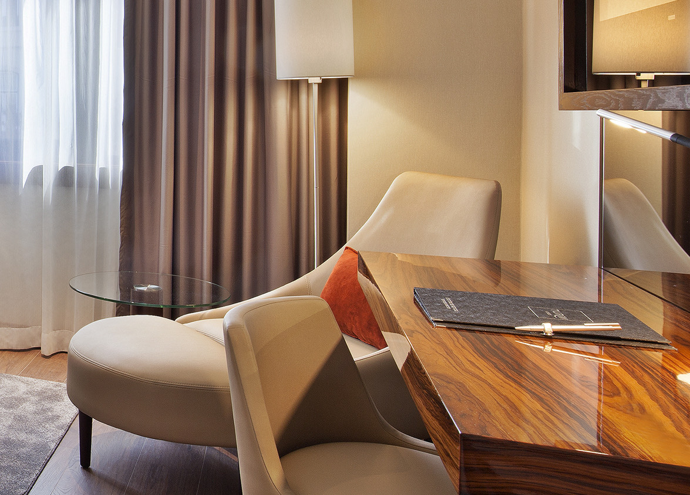
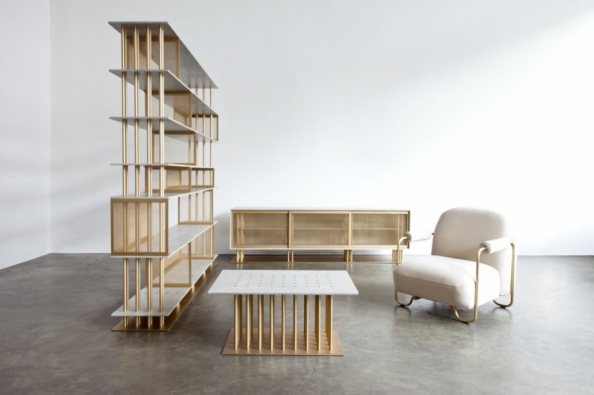
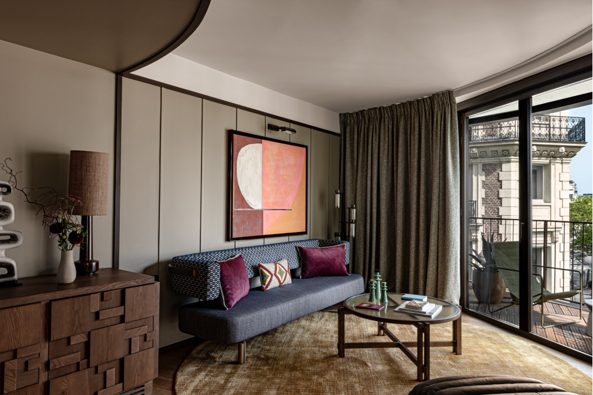

Des pièces d'exception.
Fabrication par nos artisans et nos ateliers partenaires à travers le monde. Aucune pièce de catalogue : chaque projet a ses matériaux, ses finitions et son atelier.
Le bon atelier plutôt que l'atelier disponible.
Notre réseau international, construit depuis plus de vingt ans, nous permet de réaliser les projets les plus audacieux dans les ateliers les plus à même d'y répondre — ébénisterie fine, métal, tapisserie, verre ou pierre.
C'est un choix, pas une contrainte : nous orientons chaque pièce vers l'atelier qui maîtrise réellement sa technique, et non vers celui qui a de la place dans son planning.

Chaque projet requiert ses propres matériaux et finitions.
Bois de placage et loupes, laiton patiné ou poli, laques, velours, cuirs sellier, pierre : la matière est choisie pour la pièce, jamais l'inverse.

La même chaîne, à l'échelle d'un appartement.
Les méthodes développées pour l'hôtellerie — descriptif technique, prototype, contrôle avant expédition — servent aussi les projets résidentiels haut de gamme, où l'exigence de finition est au moins équivalente et la tolérance au retard souvent moindre.
Nous travaillons avec les architectes d'intérieur et les décorateurs sur des appartements, des villas et des programmes de standing, du meuble unique à l'aménagement complet.
Discuter d'un projet privé